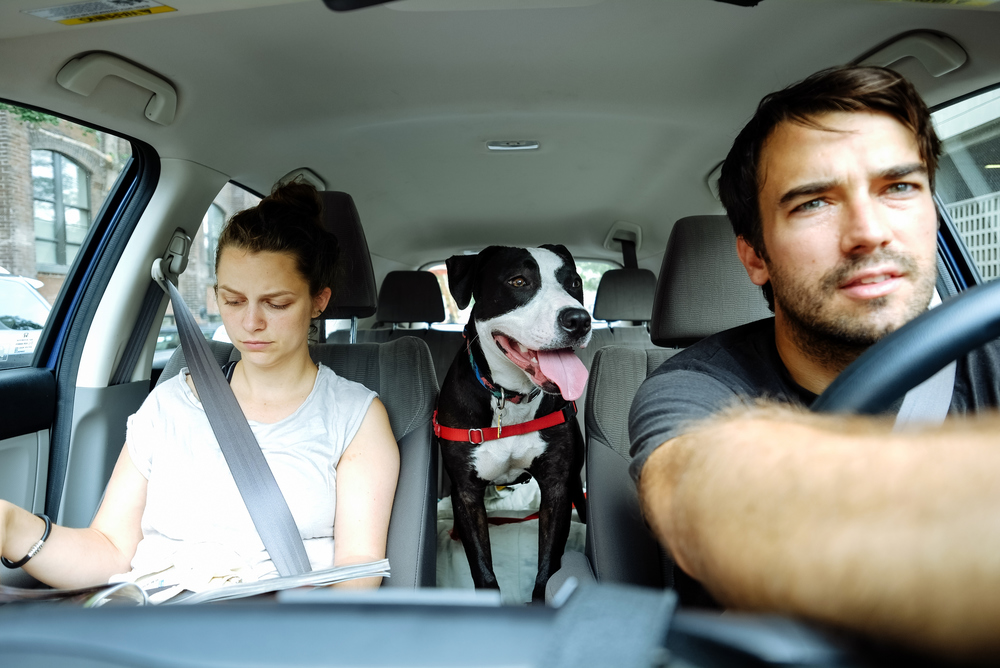

Road Trip
ROOOAD TRIIIIIP!!! Driving from New York to West Virginia can be pretty fun (when there isn’t 12 inches of snow to contend with). The drive takes around 7 or so hours if you drive straight through, but will take a little longer if you stop at some fun places on the way. Here’s a list of pit stops that you should check out on your way down south.
Cabelas in Hamburg, PA
It might sound strange, but stopping at this 250,000-sq.-ft outdoor megastore located 2 hours outside of New York City is super fun. You can stock up on camo, buy a bow and arrow, marvel at the taxidermy, or just have some kettle corn and shoot some guns (it’s an indoor shooting range with toy guns — don’t get too excited).
Sheetz Gas Station, PA / MD / WV
Sheetz is the best gas station in the world, and there are a bunch of them between NYC and WV. What makes Sheetz so great you ask? Well, sheet… let me tell you! First off, their coffee is really good, and they give out free donuts once in a while. They also have machines called MTO (which stands for “Made To Order”) that allow you to order all kinds of custom food concoctions. For example, I usually get loaded tater tots (which are like nachos but with tater tots instead of chips) or a walking taco (which is basically a frito pie). They also have great birthday cake milkshakes which is what Kel Kel usually orders.
Sideling Hill Overlook & Rest Area, Maryland
Sideling Hill is a syncline mountain, in a region of downward-folded (synclinal) rock strata between two upfolded anticlines. The ridge is capped by an erosion-resistant conglomerate and sandstone of Mississippian (early Carboniferous) geologic age. Okay, so that’s from Wikipedia, but Sideling Hill is a great place to pull over, take a break, and soak in the view.
Ohiopyle State Park, Ohiopyle, PA
Ohiopyle is a super fun pit stop — it’s about a 40 minute detour when you’re driving down from New York. Ohiopyle is a go-to spot for whitewater rafting, as well as for drinking milkshakes and dipping your toes in the water (which is what I normally do). It’s also about a 12 minute drive to Frank Lloyd Wright’s Falling Water, which is about as cool as it gets. If you’re over in that neck of the woods, you can have lunch at the Stone House, a tavern from 1822.
Coopers Rock, Morgantown, WV
Coopers Rock is one of the coolest places around. Right after you drive over the West Virginia state border on I-68 E you’ll see signs for Coopers Rock, which has an amazing view of West Virginia that really warms the heart. It makes for a great 30 minute break and a wonderful excuse to stop and enjoy West Virginia for all that it is.
Dorsey’s Knob, Morgantown, WV
Dorsey’s Knob is a cool stop in a cool town (Morgantown, that is). You can swing through Motown, check out WVU, grab a Panama Jackass burrito at Black Bear, and then spend some time walking up to the top of Sky Rock on Dorsey’s Knob to enjoy the 360 view.
Gabriel Brothers, Clarksburg, WV

Gabriel Brothers (also known as “Gabes”) isn’t just a discount clothing store, it’s a national treasure. To compare Gabes to either TJ Maxx or Marshalls would be committing a grave injustice. If it’s cool clothes at a cheap price you’re after, be sure to stop at either the Morgantown or Clarksburg location for a quick shopping break.